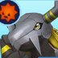
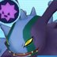

- 세대
- 완전체
- 종족
 바이러스
바이러스- 속성
 불
불- 소비 메모리
- 14
- 장비 슬롯
- 2
스테이터스 (Lv.99)
HP22605위/78
SP12367위/78
ATK23712위/78
INT10873위/78
DEF20219위/78
SPD15949위/78
막대 길이는 등록된 디지몬 중 최고값 대비 비율이에요. 순위는 스테이터스가 등록된 디지몬끼리 비교해요.
필살기 1
리벤지 플레임  보조 SP 10
보조 SP 10
자신
물리공격이나 마법공격을 받았을 때 반격 태세에 들어간다.
SS(서포트스킬)
용의 분노
공격력이 15% 상승한다.
계승기 (레벨업 습득) 4
이 디지몬이 레벨업으로 배우는 스킬이에요. 배운 스킬은 진화·퇴화해도 계속 쓸 수 있어요.
| 습득 Lv | 스킬 | 속성 | SP |
|---|---|---|---|
| 15 | 어스퀘이크 I 적 전체에 땅속성 위력 30의 물리공격. 명중률 95%. | 4 | |
| 25 | 크리티컬 차지 아군 1체에 크리티컬 발생률을 10% 올린다. | 6 | |
| 35 | 메테오 폴 II 적 전체에 불속성 위력 45의 물리공격. 명중률 95%. | 7 | |
| 45 | 볼케 네이팜 III 적 1체에 불속성 위력 105의 물리공격. 명중률 95%. | 9 |
진화 전 디지몬 (퇴화 가능) 5
진화 가능 디지몬 4

블랙워그레이몬
- 레벨 55 이상
- 최대 HP가 1800 필요
- 공격력이 140 필요
- 방어력이 140 필요
- 재능이 20 필요
가이오몬
- 레벨 50 이상
- 공격력이 120 필요
- 방어력이 100 필요
- 민첩이 100 필요
- 재능이 20 필요
워그레이몬
- 레벨 55 이상
- 최대 HP가 1700 필요
- 공격력이 160 필요
- 방어력이 130 필요
- 재능이 20 필요
- 우정이 80% 필요

켈비몬(악)
- 레벨 55 이상
- 최대 HP가 1100 필요
- 최대 SP가 100 필요
- 지력이 100 필요
- 재능이 40 필요
진화 트리 · 메탈그레이몬(청)까지 오는 길 + 다음 진화
왼쪽부터 진화 순서예요. 메탈그레이몬(청) 오른쪽(점선 칸)은 바로 다음 진화 1단계예요. 그 뒤가 궁금하면 그 디지몬을 눌러 따라가 보세요. 선은 출발하는 디지몬의 색을 따라가요. 디지몬을 한 번 누르면 거기서 메탈그레이몬(청)까지 가는 경로만 남고, 한 번 더 누르면 그 디지몬 페이지로 이동해요. 회색 칸은 아직 정보가 없는 디지몬이에요.
유년기I
유년기II
성장기
성숙기
완전체
궁극체 ▸